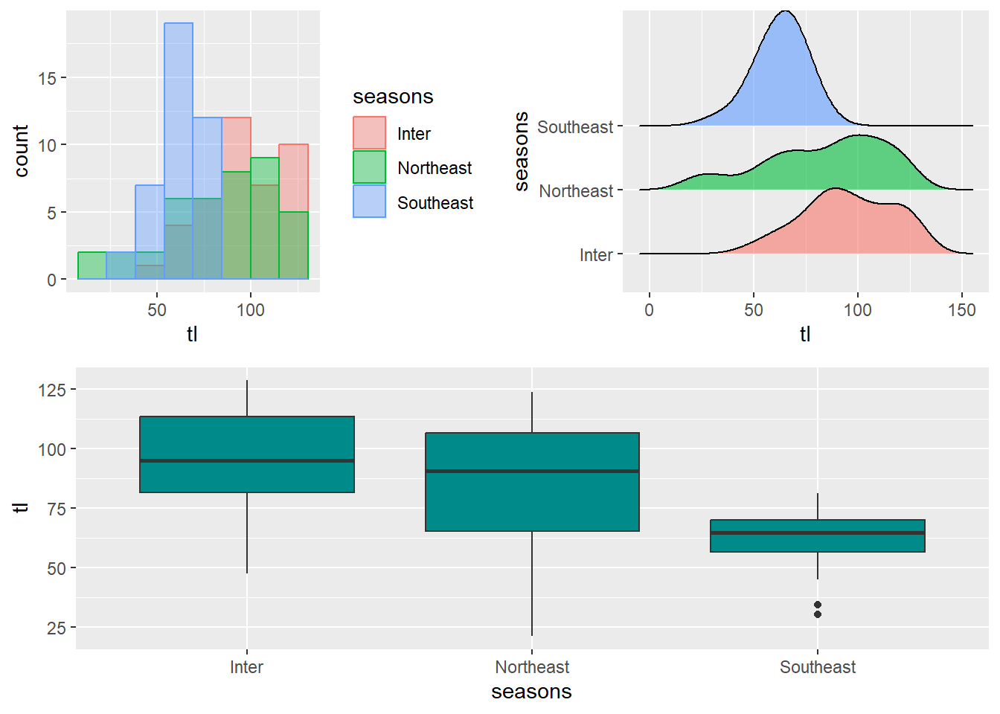

![]()
require(tidyverse)
require(patchwork)
require(cowplot)Combining plots in R
Analysis
Visualization
The ggplot2 package doesn’t provide a function to arrange multiple plots in a single figure (Wickham 2016). Still, some packages allow combining multiple plots into a single figure with custom layouts, width, and height, such as cowplot (Wilke 2018), gridExtra, and patchwork (Pedersen 2020). In this post we are going to use several packages, let’us load them in our session
Sample datasets
# tuna = tibble(
# tl = runif(n = 120, min = 30, max = 120),
# seasons = rep(c("Northeast", "Southeast", "Inter"), each = 40)
# )
tuna = tibble(
tl = c(rnorm(n = 40, mean = 80, sd = 30),
rnorm(n = 40, mean = 61,10),
rnorm(n = 40, mean = 96, 25)),
seasons = rep(c("Northeast", "Southeast", "Inter"), each = 40)
)ridges = tuna %>%
ggplot() +
ggridges::geom_density_ridges(aes(x = tl, y = seasons, fill = seasons), position = "identity", alpha = .6)+
theme(legend.position = "none")
ridgesbox = tuna %>%
ggplot(aes(x = seasons, y = tl)) +
geom_boxplot(fill = "cyan4")
boxhist = tuna %>%
ggplot(aes(x = tl, fill = seasons, color = seasons)) +
geom_histogram(bins = 8,position = "identity", alpha = .4)
histgridExtra
The gridExtra package provides the grid.arrange function to combine several plots on a single figure.
gridExtra::grid.arrange(hist, box, ridges)We can also specify the number of rows with nrow, the number of columns with ncol, and the sizes with widths and heights, and also we can add labels at the top, bottom, left, and right of the figures.
gridExtra::grid.arrange(hist, box, ridges, nrow = 2, top = "Top Panel", bottom = "Bottom Panel")Patchwork
patchwork is designed to combine ggplot2 plots into the same figure easily. You only need to call the package in the session and then do the manipulation
For instance, we combine plots using + operator
hist + box + ridgesThe | operator places plots in a row. This operator is similar to + when you have two plots but | will place all plots in a single row while + will try to create a square layout if possible.
hist | ridgesif we want to arrange plots along a column (stack), then we use the / operator
hist / ridgesWe can create complex layouts. The | and / operators can be used to create complex layouts combining plots. In the following example, we are creating a layout with two plots at the top and one wider at the bottom.
(hist / ridges)| boxSimilary, we can swap the operator and see the different of the figure below as compared to the previous one
(hist | ridges)/ boxYou can add a title, subtitle, and captions to all plots with the plot_annotation function.
(hist | ridges)/ box + plot_annotation(tag_levels = "A")The labels can be customized with the tag_prefix, tag_suffix, and tag_sep arguments.
(hist | ridges)/ box + plot_annotation(tag_levels = "A", tag_prefix = "Plot ")box +geom_jitter(color = "cyan3")
patchwork also provides the & operator to modify all the plots at the same time to set the same theme for all plots at the same time.
(hist | box)/ ridges & theme_classic()If you want to label each plot individually you can make use of the labels argument of the function, where you can specify a vector of labels or use the “A” or “a” keywords for automatic labels in uppercase or lowercase, respectively. The function also provides several arguments to customize the style of the texts.
plot_grid(hist, box, ridges, labels = c("A", "B", "C"), label_fontfamily = "serif", label_fontface = "bold", label_colour = "dodgerblue2")With cowplot you can also create more complex layouts combining plot_grid functions, as shown in the example below, where we are creating a layout with two plots at the bottom and one at the top.
plot_grid(plot_grid(hist, ridges), box, rows = 2)
Cited Materials
Pedersen, Thomas Lin. 2020. Patchwork: The Composer of Plots. https://CRAN.R-project.org/package=patchwork.
Wickham, Hadley. 2016. Ggplot2: Elegant Graphics for Data Analysis. Springer-Verlag New York. https://ggplot2.tidyverse.org.
Wilke, Claus O. 2018. Cowplot: Streamlined Plot Theme and Plot Annotations for ’Ggplot2’. https://CRAN.R-project.org/package=cowplot.